, the object wave itself with amplitude and phase, so the image is three-dimensional; the fringe spacing
, the object wave itself with amplitude and phase, so the image is three-dimensional; the fringe spacing  demands sub-µm film resolution and a source coherent over the path differences.
demands sub-µm film resolution and a source coherent over the path differences.
Principle (derivation)
Exposure is proportional to intensity:
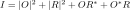
. With a linear response the transmittance is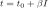
. Re-illuminate with :
: 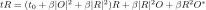
. The first group is the attenuated reference (zero order);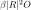
is a copy of the object wave (virtual image, seen behind the plate where the object was);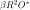
is the conjugate wave (real image). With an off-axis reference (Leith–Upatnieks) the three waves leave at different angles and do not overlap — Gabor's in-line hologram (1948) suffered from that overlap (Gabor 1948; Leith and Upatnieks 1962).Picture: recording
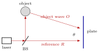
and the object wave interfere on the photographic plate, which stores both amplitude and phase.Worked examples
- Fringe spacing at 633 nm:
 between the beams gives
between the beams gives 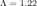
µm (820 lines/mm);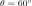
: 0.633 µm; counter-propagating beams (reflection hologram,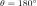
):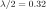
µm, 3160 lines/mm. Ordinary photographic film resolves ~100 lines/mm: holograms need special emulsions or photopolymers. - Stability: fringes must not move by more than ≈
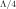
during exposure. A 1 s exposure tolerates relative drifts of ≈ 0.1 µm: a vibration-isolated table, or a pulsed laser (ns) for living subjects. - Coherence: an object 20 cm deep needs path differences up to ≈ 40 cm to stay within the coherence length: a single-longitudinal-mode laser (
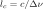
of metres), not a multimode He–Ne with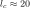
cm (coherence).
Engineering applications
Security holograms on banknotes (embossed surface relief), holographic interferometry (compare a wavefront before and after loading: fringes map µm deformations), volume holographic gratings and Bragg filters, head-up and AR displays (holographic waveguides), holographic data storage, digital holography (record on a camera, reconstruct numerically) for microscopy.
Exam-style exercise
Two 532 nm beams at 40° record a transmission hologram. (a) Fringe period. (b) A 650 nm beam reads it: at what angle is the first-order diffraction relative to the reading beam if it hits the grating normally?
Solution
(a)
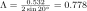
µm. (b) Grating equation (gratings) with normal incidence: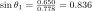
,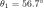
. A thick (volume) hologram would diffract efficiently only at the Bragg angle; reading at another wavelength mismatches it.Pitfall
A hologram is not a picture of the object: it stores the interference pattern, whose spacing is set by the beam angle, not by the object's detail; cutting a hologram in pieces keeps the whole scene, with less resolution.